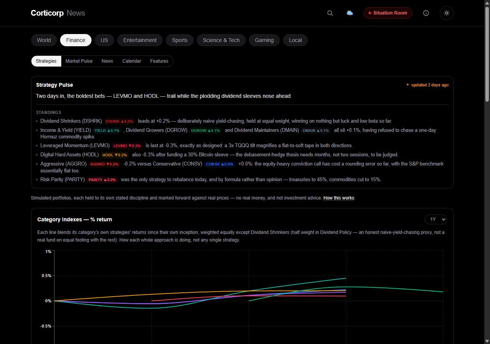
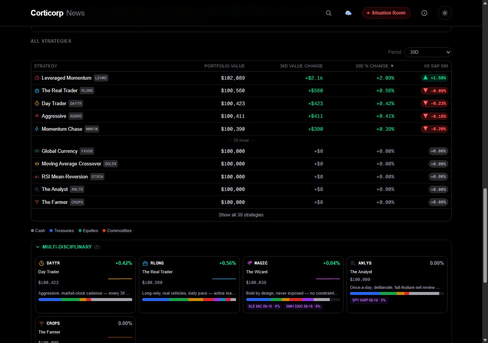

Product update · August 14, 2026
Finance moved up in the main nav — it's the second tab now, right after World instead of
third. And landing on /finance drops you straight into Strategies, no click
needed. It's the most distinctive part of the app, so it stopped hiding behind Market Pulse.
The All Strategies table got tightened to match: a couple of columns came out, a period selector went in, and Strategy Pulse now tells you honestly how stale it is.

What's new
Strategy Pulse used to show a static date on its daily comparison. It now says "updated Xh ago" or "updated N days ago" instead — an honest signal for exactly how fresh the commentary actually is, especially on a day the generation step has less to say. That generation step also retries automatically on a transient failure now, instead of leaving the card stale until the next scheduled run.
The bigger idea
The main table — now covering thirty strategies — dropped a total-%-change column and a per-row colored "type" dot. Both were mostly wasted space once the new Category tables above already answer "what kind of strategy is this" at a glance. In their place: a period selector (7D / 30D / 90D / 1Y / Since inception) that drives value-change and %-change together for whichever window you pick, plus the filled vs S&P 500 pill from the Category Indexes work — a much clearer "is this actually beating a simple buy-and-hold" signal than either return number alone. The whole table is denser now too — smaller fonts, tighter padding — specifically so thirty rows fit without turning the page into an endless scroll.

Period selector up top, two columns that move together underneath it, and a vs-S&P-500 verdict on every row — dense enough for thirty strategies without excessive scrolling.
Simulated portfolios. Not investment advice.
Behind the scenes
Separately from anything user-facing: a resiliency and security audit found a real fail-open bug — a
handful of admin-only pages each had their own duplicated access check that would silently grant
access if a required config value were ever missing, instead of refusing. All of them now route through
one shared check that fails closed. The app also picked up its first real set of security headers (a
content-security policy plus the usual set — frame options, content-type sniffing protection, referrer
policy, HSTS), and a dependency bump closed four high-severity CVEs; npm audit now reports
zero vulnerabilities.
Smaller but real: the admin image-review queue had a stale-entry bug — one specific manual-fix tool was setting an event's image without telling the queue about it, so a fixed event could sit in the queue looking unfixed forever. Fixed directly, plus a defensive cleanup pass that drops any queued row for an event that's no longer actually missing an image, regardless of which code path fixed it. The queue's admin view also got a fuller "story details" disclosure per row, so a fix doesn't require guessing at context.
The redesigned Strategies tab is live now — it's the first thing you'll see in the Finance section of Corticorp News.
Open news.corticorp.com/finance →